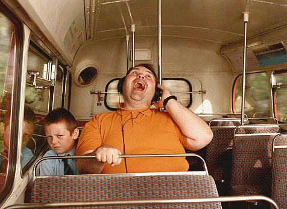

What kind of stories did we collect?
“When I was on bus, I doubts whether to sit down. If I stood still, my back would hurt and I would sweat. But if I took a seat, I would take up 2 places and people would look at me wierdly.”
Ball & Stalk(Dutch: Bal & Spriet) is a storytelling board game in aid of a mobile application guidance, aiming to lower the threshold of communicating about obesity and weight, and even nudge a dialogue about weight is a positive way.
This project is The Healthy Storytelling project (2018-2020), examines how interactive storytelling can contribute to making eHealth accessible to the obesity group with low literacy and how eHealth can be used for obesity prevention. Through a Research-through-Design approach, the research team works closely with obesity patients, medical practitioners and serious game companies and other NGOs.
The strategy of this project is utilizing true personal stories to generate more storytelling, via an interactive and fun game experience. In this way, we hope that people can reflect on their daily life issues about the obesity stigma, and feel more free and position to talk about weight. Therefore, the whole design process is divided into 3 phases: [1] collect stories, [2] design with stories, [3] generate stories.
We collect stories about daily events from overweight people. We then tell them anonymously to others to encourage them to tell their story. All those stories put together can cause people to adjust their prejudices and misconceptions. I didn’t actually participate in this part because this session was already complete before I joined this project.
We collected the stories, and wanted to utilize them as a catalyst for more open communication and storytelling between people. We think role-play is a good strategy. Therefore, we create two roles: Ball & Stalk. Ball stands for the people in large size while the stalk represents the people with normal weight. In the game, one player plays the role of ball while the other one plays the role of stalk. They will go through the daily life of Ball & Stalk which were adapted from the stories we collected. And then, try to empathize with them.
How can we make players go through the stories of Ball & Stalk? The board game aided by a mobile app is an ideal way. The players need to encounter the different scenes of the storyline displayed on the game board. They move forward on the board by throwing the dice on the app and move their token on the board. Yep, similar mechanism with the game Monopoly.
Design of Board
The way we organize the board is contingent on the way we structure the storyline. We referred to the Freytag Pyramid of interactive storytelling, and then build up the storyline, the two roles, get to know, have prejudice, try to reconcile with, and empathize with each other.
As you can see, the storyline divided the whole story game into 3 parts, and this informed our design decisions on the game board. Players can move on the line( yellow for Ball and green for Stalk), and come across different daily life scenes, and hence, experience the life and thoughts of the role which he/she played.
Function of an app
1. We can throw the dice on the app with nice animation, so that players can get a random number to decide how many steps they should go forward on the map.

2. Audio guided is offered on the app, because the target group is the obesity patient with low literacy. The audio guide can reduce their burden of reading.

3. Facilitate the game mechanism. We designed different game stages, in which people need to make a choice, guess an answer or record their personal story in the game. So, a digital app is the best tool for supporting these activities.
PART 1
In this part, the two players need to take their turn to roll the dice, and move the token on the map based on the number, and come across a story. The story is illustrated in the means of graphic and audio. After that, the app will give a question about the dilemma in the story and provide three choices. Players need to make their choices by clicking the options, and at the same time, explain the thoughts behind their choices.

PART 2
In this part, players take turns to roll dice, move around on the board, and get new stories, similar actions with those in part 1. But players have a different task: sharing their opinions on the stories in 20 seconds. Players can start a timer in the app after they get prepared for their speech.

PART 3
In this part, players collaboratively undertake the game tasks, instead of separately taking their turns to play. They roll the dice, move around the board together, get new game stories and make choices in the dilemma. But players who play the role of ball and stalk should make choices separately and secretly. After that, their answers will be shown on the app. If they make the same choices, they can go ahead on the storyline, if not, they need to go back to the place where they start from. Finally, they finish all of the three parts and reach the final end.

The game was going to be developed by a Unity technologist. As the graphic and UX designer, I needed to communicate with him about the UX flow, UI paradigm and game material (audio, text, graphics, etc.).
After the game was developed, we wanted to figure out whether the game is able to generate more stories from players. Then we decided to test it. The game was initially tested in the INSCIENCE International Film Festival NIJMEGEN. We tested 19 players, and wanted to figure out the usability, experience and effect of this game.
* The general usability of this game is good. We found that 16 out of 19 participants gave a score more than 4 (the 5-point system).
* The app is easy to use for people who are unfamiliar with digital user interface. The age of the participants ranged from 10 to 70, but we didn’t find a significant correlation between the usability score and age.
* Incentive mechanism of the game should be improved.
* Four-player setting (2 players for one role) is the best for the game engagement.
* The game really helped raise the awareness of weighty stigma in daily life, from the questionnaire results.
* The game didn’t help to lower the threshold of talking about weight. Because this could be a long-term effect which could not be instantly evaluated right after game play, and we put more focus on how to deal with prejudice when designing stories.